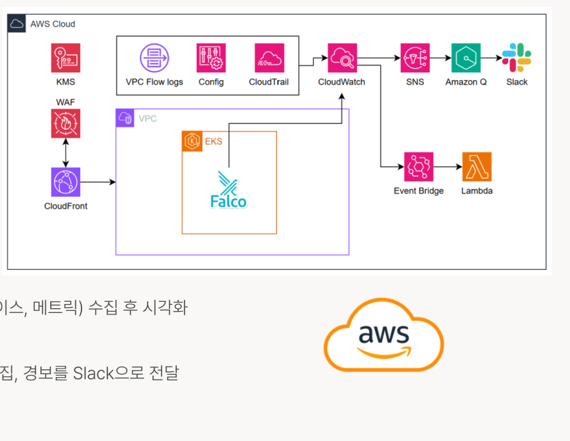

PROJECT 01 · CLOUD WAVE 6기CGV 예매 서비스 기반
CGV 예매 서비스 기반
AWS 인프라 구축
CGV 예매 서비스 모델을 기반으로 안정성과 확장성을 고려한 클라우드 인프라 팀 프로젝트입니다. 보안 모니터링과 원격 접속 환경 구축을 담당했습니다.
- CloudTrail, AWS Config, VPC Flow Logs를 CloudWatch로 통합 수집
- 이상 징후 감지 후 알림을 전달하는 모니터링 흐름 구성
- Lambda를 활용한 S3 보안 설정 자동 대응 시나리오 구현
- Client VPN을 활용한 관리 환경 접속 구성
AWSCloudWatchCloudTrailLambdaClient VPN
